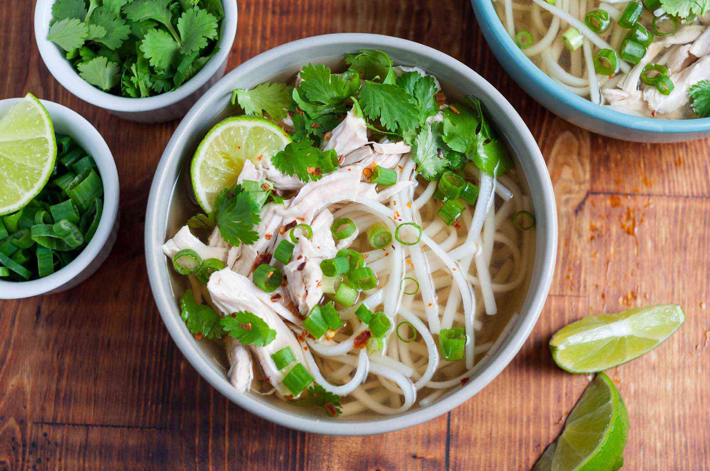

Vietnamese Chicken Pho soup (Pho Ga)

Prep time: 10 minutes
Ingredients
- 3/4-inch (2 cm) section ginger
- 2 medium-large green onions
- 1 very small (15 g) bunch cilantro sprigs
- 1 1/2 teaspoons coriander seeds
- 1 whole clove
- 3 1/2 to 4 cups (840 ml to 1 L) low-sodium chicken broth
- 2 cups (480 ml) water
-
6 to 8 ounces (180 to 225 g) boneless, skinless chicken breast or
thighs
- About 1/2 teaspoon fine sea salt
- 5 ounces (150 g) dried narrow flat rice noodles
- 2 to 3 teaspoons fish sauce
-
About 1/2 teaspoon organic sugar, or 1 teaspoon maple syrup (optional)
- Pepper (optional)
-
Optional extras: Bean sprouts, mint sprigs, Thai basil, cilantro
leaves, lime wedges, thinly-sliced chili peppers
Instructions
-
Peel then slice the ginger into 4 or 5 coins. Smack with the flat side
of a knife or meat mallet; set aside. Thinly slice the green parts of
the green onion to yield 2 to 3 tablespoons; set aside for garnish.
Cut the leftover sections into pinkie-finger lengths, bruise, then add
to the ginger.
Coarsely chop the leafy tops of the cilantro to yield 2 tablespoons;
set aside for garnish. Set the remaining cilantro sprigs aside.
-
In a 3- to 4-quart (3 to 4 l) pot, toast the coriander seeds and clove
over medium heat until fragrant, 1 to 2 minutes. Add the ginger and
green onion sections. Stir for about 30 seconds, until aromatic.
-
Slide the pot off heat, wait 15 seconds or so to briefly cool, then
pour in the broth.
Return the pot to the burner, then add the water, cilantro sprigs,
chicken, and salt. Bring to a boil over high heat, then lower the heat
to gently simmer.
-
After 5 to 10 minutes of simmering, the chicken should be firm and
cooked through (press on it and it should slightly yield).
-
Continue to simmer the broth without the chicken for another 15 to 20
minutes (for a total of 30 minutes simmering time).
-
Transfer the chicken to a bowl, flush with cold water to arrest the
cooking, then drain. Let cool, then cut or shred into bite-size
pieces. Cover loosely to prevent drying.
-
Soak the rice noodles in hot water until pliable and opaque. Drain,
rinse, and set aside.
-
When the broth is done, pour it through a fine-mesh strainer
positioned over a 2-quart (2-liter) pot; line the strainer with muslin
for superclear broth. Discard the solids. You should have about 4
cups.
Season with fish sauce and sugar (or maple syrup), if needed, to
create a strong savory-sweet note.
-
Bring the strained broth to a boil over high heat. Put the noodles in
a noodle strainer or mesh sieve and dunk in the hot broth to heat and
soften, 5 to 60 seconds. Lift the noodles from the pot and divide
between the 2 bowls. [Emma's note: I didn't find it necessary to
soften my noodles any further. I just added them to the bowls and
poured the hot broth over top. However, dunking them in the broth
would make them more flavorful!]
Lower the heat to keep the broth hot while you arrange the chicken on
top of the noodles and garnish with the chopped green onion, cilantro,
and a sprinkling of pepper. Taste and adjust the broth’s saltiness one
last time. Return the broth to a boil and ladle into the bowls. Enjoy
with any extras, if you like.